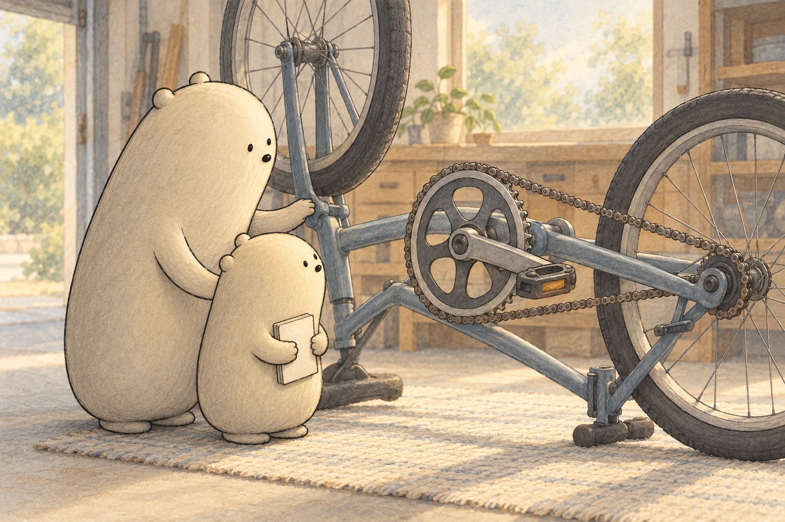
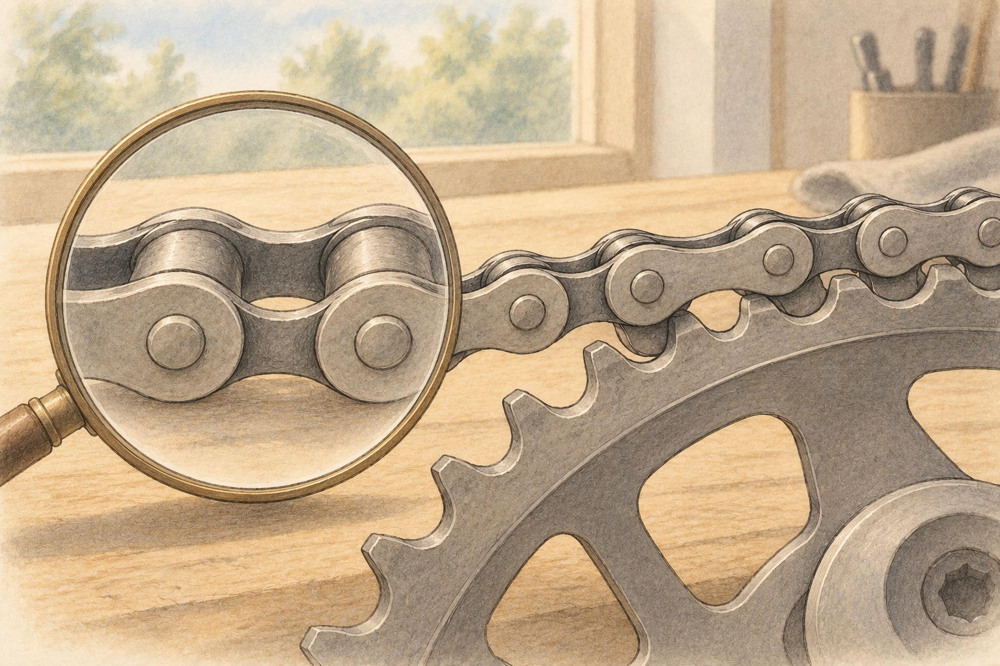
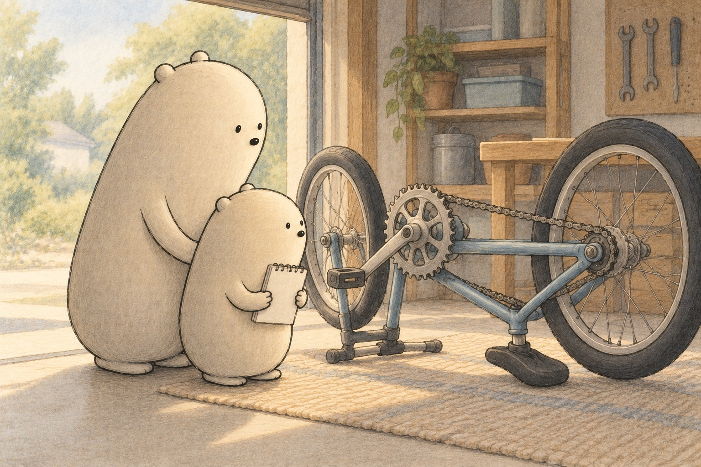

Follow one pedal push
How a Bike Chain Works

Little Wonderer studied the bike resting on its mat. The pedals sat far from the back wheel. “How does one push reach all that way?” A chain joined them. It was a loop of small metal pieces called links. Big pointed along the loop, from the front sprocket to the back.

Each link joined the next with a tiny pin. The links could turn at these joints, so the chain bent around a wheel without stretching like rubber. That toothed wheel was a sprocket. Its teeth fitted between the chain’s rollers. The hooked-together shapes kept the chain from slipping as it pulled.

With the bike completely still, Little counted teeth. The big front sprocket, called the chainring, turned with the pedals. Its teeth pulled the top of the chain toward the front. The moving chain pulled the back sprocket’s teeth. While pedaling forward, that sprocket drove the back wheel. Turning became pulling, then turning again.
- chain
- a loop of joined links that carries a pull
- link
- one small piece in a chain
- pin
- a tiny rod that joins neighboring links
- sprocket
- a wheel with teeth that fit a chain
- teeth
- the points around a sprocket that engage the chain
- pedal
- the part your foot pushes to turn the front sprocket
- gear
- a choice of sprockets that changes effort and wheel turns
- pull
- a force that draws something toward it
- turn
- to move around a center
- wheel
- the round part that rolls the bike along